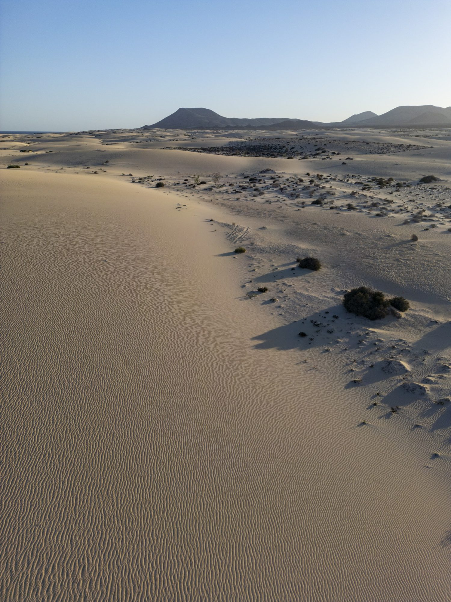
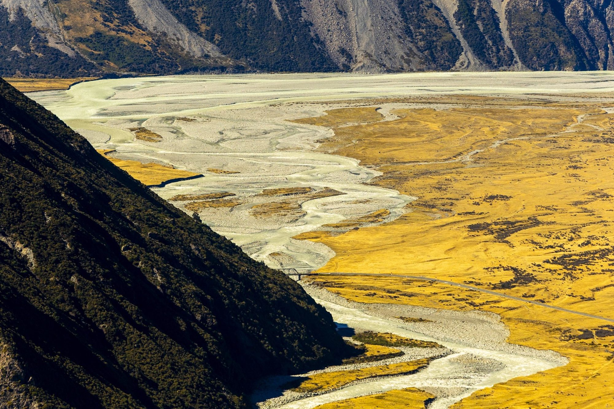
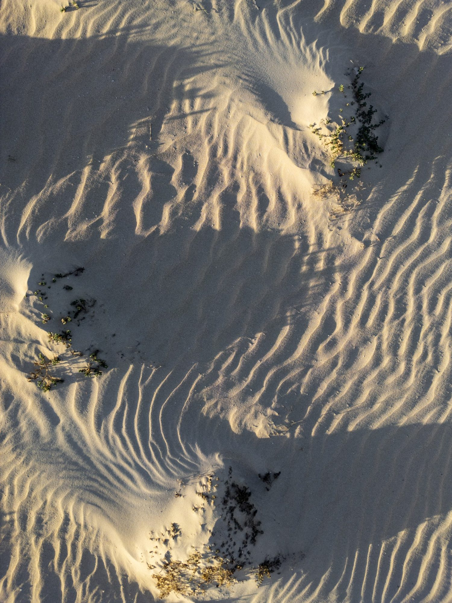
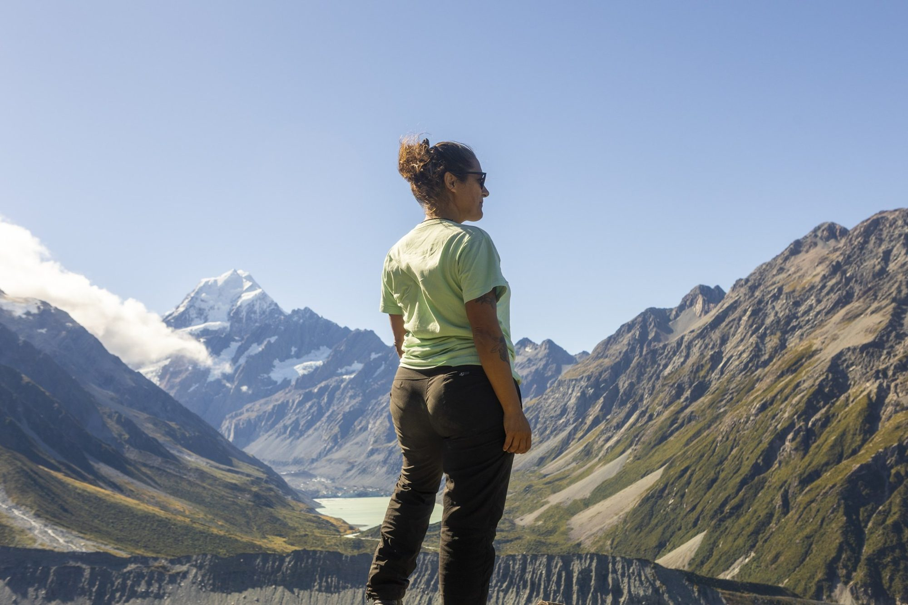

GADYMY MIRAS × JUAN AIZPURU
Bring your
journeys
to life.
Original photography and film to help travellers discover your routes through Turkmenistan and Uzbekistan.
EXPLORE THE PROPOSAL ↘JUAN AIZPURU · PREVIOUS PORTFOLIO IMAGE · ILLUSTRATIVE
A PROPOSAL FOR GADYMY MIRAS
Show the journey.
Inspire the booking.
Your itineraries bring together heritage, desert landscapes and the people who make each journey possible.
I propose travelling with your guides and local team to produce original photography and film around the routes you want to promote. From Merv and Nisa to Yangykala, Nohur and a night in the Karakum, we can show what travellers will experience on the ground.
Your team can use the resulting images to create its own campaigns and presentations, or work with me and my team on a complete campaign tailored to your audience.
EXPLORE THE COLLABORATION ↗
ROUTES · LANDSCAPES · PEOPLE
Show the places.
And the journey between them.
A VISUAL PRODUCTION BUILT FOR YOU
Make your itineraries
easier to imagine.
Built around the tours and services Gadymy Miras already offers, and adapted to the clients and routes you choose.
01Bring your Turkmenistan routes to life+
Create a cohesive visual story of your Ashgabat-to-Ashgabat itinerary: historic Merv and Nisa, the landscapes of Yangykala, Nohur village and the desert camp at Darvaza. The final route is agreed together.
02Present your combined journeys+
Develop photography and film for your Turkmenistan–Uzbekistan programme, showing the rhythm of travelling across the region and the experiences you choose to feature.
03Show the people behind the trip+
Work alongside your local guides, drivers and hosts to show how they help travellers connect with each place. Participation and permissions are agreed with your team.
04Give your team material to use+
Create a visual collection for your website, tour pages and partner presentations. Your team can build its own campaign, or commission us to develop one with you. Scope and usage are agreed in advance.
SELECTED WORK
A personal perspective,
ready for your routes.
These photographs are Juan Aizpuru’s previous work outside Turkmenistan and Uzbekistan. They illustrate his approach; the proposed images would be created on location with Gadymy Miras.


WORKING TOGETHER
Local knowledge.
A shared vision.
We begin with the routes, services and travellers you want to reach, then agree a practical production plan with your local team.
The production can cover a single itinerary or several locations, over the time the project needs. Your team’s help with guides and local logistics would shape the plan.
Deliverables, production responsibilities and usage rights are agreed before work begins. Juan retains ownership of the original material.
ABOUT JUAN AIZPURU
Photography, film
and a curious eye.
I’m Juan Aizpuru, a photographer and filmmaker working across travel, people and the outdoors. I collaborate with local teams and bring a production crew when a project calls for it.
I create visual work that helps travel businesses show the value of the journeys they offer.
EXPLORE MY WORK ↗Made on location.
Shaped around your journeys.
FITUR 2027 · MADRID
Let's talk about
your next journey.
I would love to hear which routes and audiences matter most to your team, and explore how we could work together.
VIEW MY PORTFOLIO ↗Gadymy Miras · Stand 8F31, Pavilion 8